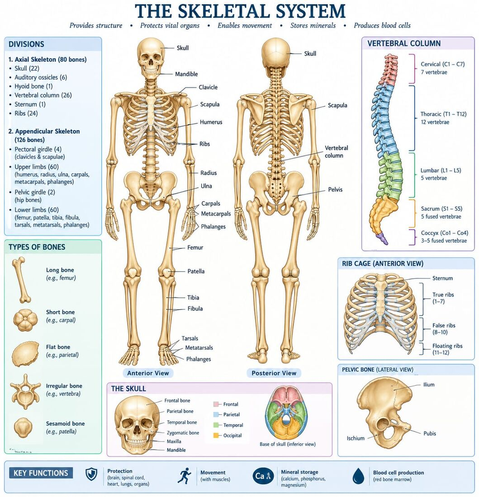
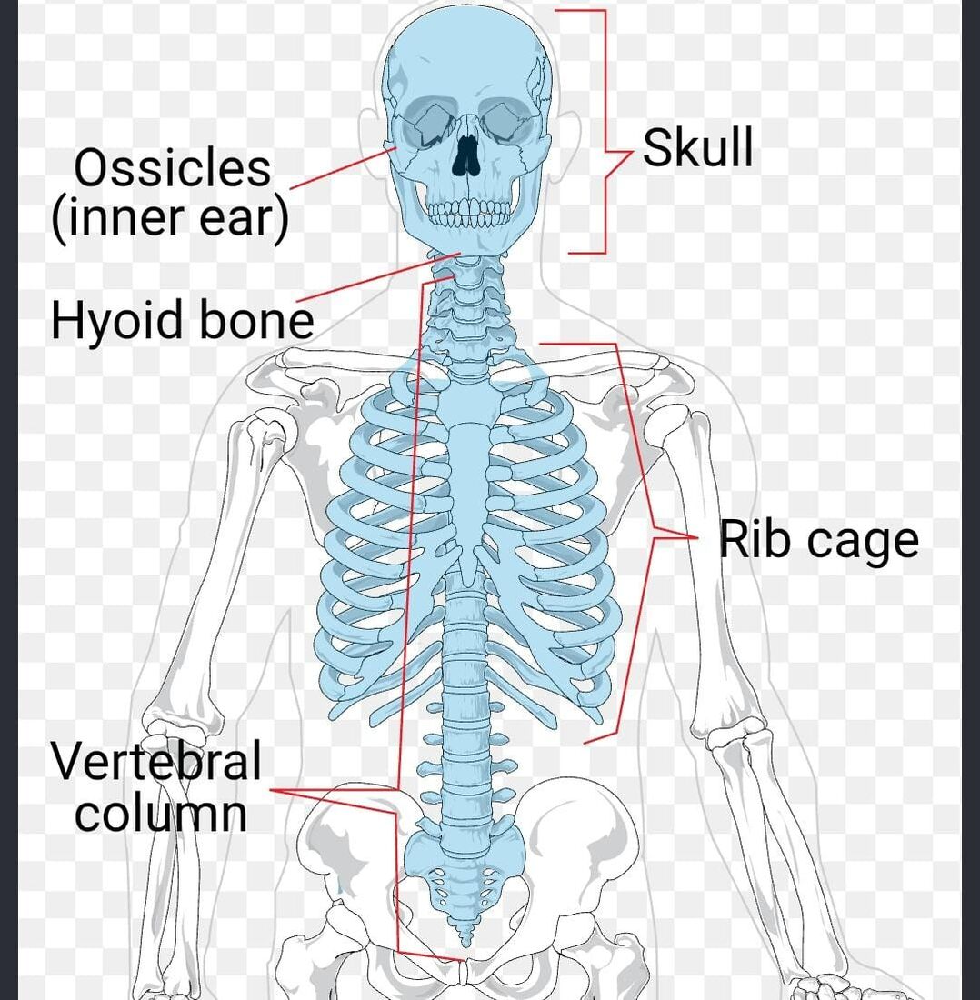
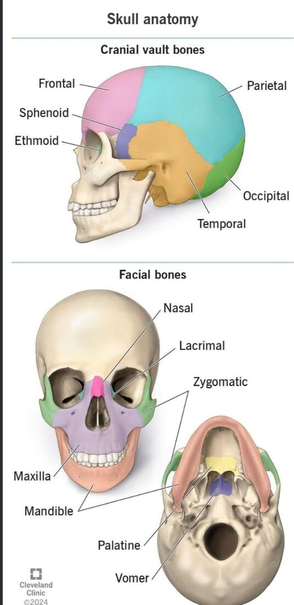
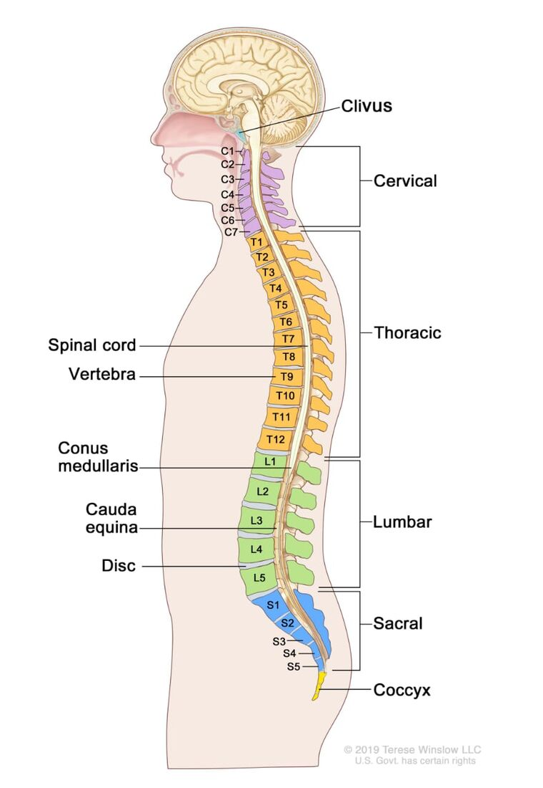
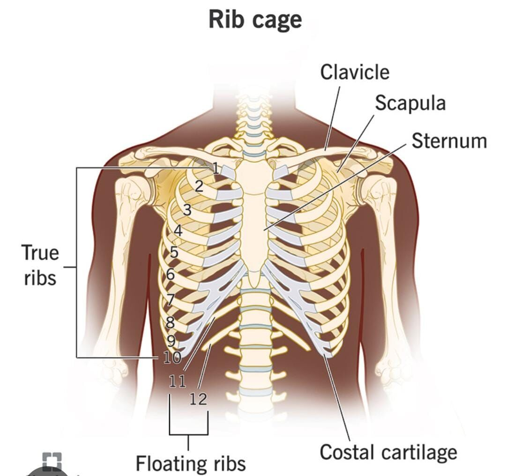
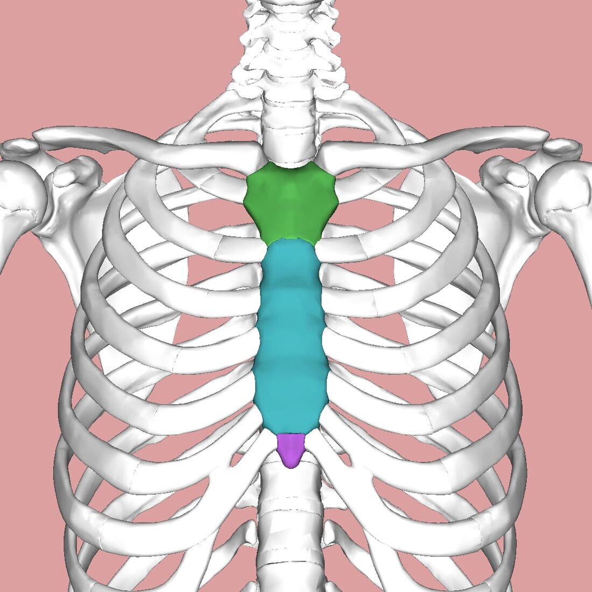
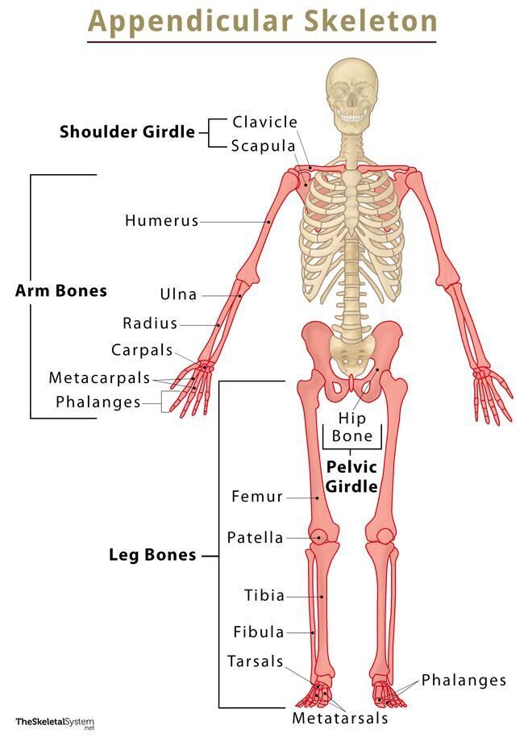
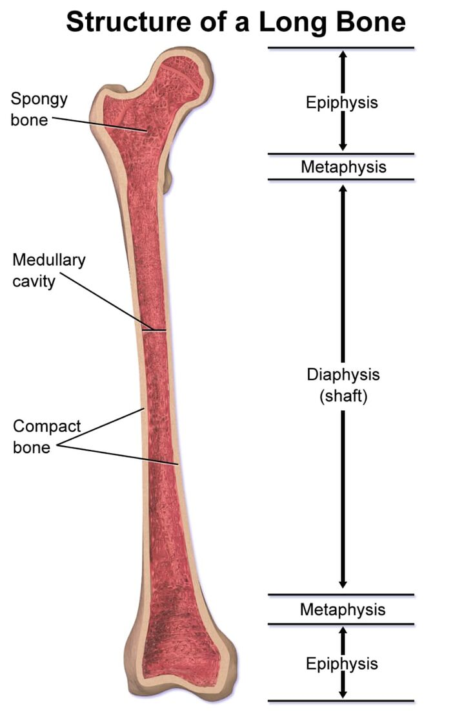
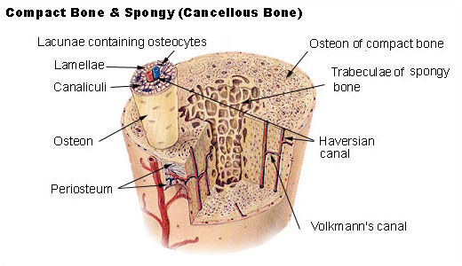
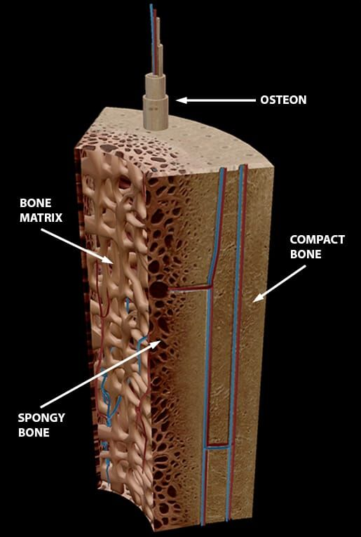

Concept map: see it all at a glance →
The Skeletal System: Frame, Armour and Factory
206 bones in two divisions. Each bone is a living organ that works with muscles, joints, ligaments and cartilage.
| Your syllabus line | Where it is on this page |
|---|---|
| Skeletal system: divisions, types of bone, salient features | 1 (divisions, functions), 5 (types of bone), 6 (structure), 7 (cells, growth) |
| Axial and appendicular skeletal system | 2 and 3 (axial), 4 (appendicular) |
| Exercise physiology: musculo-skeletal system in yogic practices | 8 (bones and yogic practice); joints and muscles are on their own pages |

- Skeleton – the framework of bones, cartilage, joints and ligaments; about 206 bones in an adult.class
- Axial skeleton (80) – the central axis: skull, hyoid, ossicles, vertebral column, thoracic cage.class
- Appendicular skeleton (126) – the limbs plus the girdles that hang them on the axis.class
- Five shapes – long, short, flat, irregular, sesamoid (section 5).class
- Bone is living tissue – it has blood supply, is built and broken down all life long (section 7).class
1ASix functions of the skeleton
| Function | What it means | Example |
|---|---|---|
| Support | Rigid frame that carries body weight and anchors soft tissue | Vertebral column holds up the trunkclass |
| Protection | Bone boxes round soft organs | Skull: brain. Vertebrae: spinal cord. Ribs: heart and lungsclass |
| Movement | Bones act as levers (rigid bars) that muscles pull through tendons | Biceps pulls the radius to bend the elbowclass |
| Mineral store | Reservoir of calcium and phosphate, released into blood when needed | Calcium kept steady in bloodclass |
| Blood-cell making | Red marrow makes red cells, white cells and platelets (haemopoiesis) | Flat bones, ends of long bonesclass |
| Fat store | Yellow marrow stores fat as an energy reserve | Medullary cavity of long bonesclass |
The skeleton is more than a coat-hanger. Think of it as a building with a job list: it holds the building up (support), puts walls round the valuable rooms (protection), gives the muscles something firm to pull on (movement), and also runs a bank (calcium) and a factory (blood cells in red marrow) inside its own walls.
Tendon joins muscle to bone; ligament joins bone to bone. Cartilage cushions the joints. Together with muscles these make the musculo-skeletal system.class
S-P-M-M-B-F: Support, Protect, Move, Mineral store, Blood-making, Fat store. Or say: “Stand, Protect, Move, Minerals, Blood, Fat.”
Tendon vs ligament: tendon = muscle→bone (T for Tie muscle); ligament = bone→bone (L for Link bones). Red vs yellow marrow: red makes blood, yellow stores fat.
Short note: “Functions of the skeletal system”. List the six functions with one example each, then state 206 bones = 80 axial + 126 appendicular.
“The skeleton is 206 bones. It holds us up, protects the brain, heart and lungs, lets muscles pull to make movement, stores calcium and fat, and the red marrow inside makes our blood cells.”
Axial Skeleton: Skull, Hyoid and Ossicles
The central axis of the body: 80 bones that protect the brain, spinal cord, heart and lungs.

- Skull (22) – 8 cranial + 14 facial bones.PDF
- Ear ossicles (6) – malleus, incus, stapes in each ear; the smallest bones.class
- Hyoid (1) – U-shaped neck bone for tongue and neck muscles.class
- Vertebral column – 33 vertebrae (class) or 26 bones (PDF); see the note in section 3.class
- Thoracic cage – sternum + 12 pairs of ribs + thoracic vertebrae.class
- Count – 22 + 6 + 1 + 26 + 25 = 80 (the PDF count; sternum 1 + ribs 24).PDF
2AThe skull: cranial and facial bones

- Frontal – forehead (front).class
- Parietal (2) – top and sides of the roof.class
- Temporal (2) – near the ear.class
- Occipital – extreme back, meets the neck; has the foramen magnum for the spinal cord.classgeneral
- Sphenoid and Ethmoid – deep bones of the skull floor and between the eyes.class
- Facial 14: maxillae 2, zygomatic 2, nasal 2, lacrimal 2, palatine 2, inferior nasal conchae 2, vomer 1, mandible 1.PDF
- Mandible – the only movable skull bone (jaw); everything else is joined by immovable sutures.class
| Group | Bones | Count | Job |
|---|---|---|---|
| Cranial | Frontal 1, parietal 2, temporal 2, occipital 1, sphenoid 1, ethmoid 1 | 8 | Closed box that protects the brainclass |
| Facial | Maxillae 2, zygomatic 2, nasal 2, lacrimal 2, palatine 2, inferior conchae 2, vomer 1, mandible 1 | 14 | Shape of the face; frame of mouth and nosePDF |
Cranial 8: “PEST FOO” = Parietal×2, Ethmoid, Sphenoid, Temporal×2, Frontal, Occipital (that is 2+1+1+2+1+1 = 8). Facial 14: say “Mandible, Vomer, then 2 each of Maxilla, Zygomatic, Nasal, Lacrimal, Palatine, Concha” = 1+1+12 = 14. (Mnemonics here are made up for these notes.)added
2BHyoid and ear ossicles
| Bone | Count | Key facts |
|---|---|---|
| Hyoid | 1 | Single U-shaped neck bone; does not join any other bone (held by muscles and ligaments); attachment for tongue and neck muscles; helps swallowing and speech.classPDF |
| Ossicles | 6 (3 per ear) | Malleus (hammer), incus (anvil), stapes (stirrup). Carry sound vibrations. Stapes = smallest bone in the body.classgeneral |
2CSutures: why the skull does not move
- Cranial bones are joined by sutures, a fibrous joint found only in the skull.class
- Example: the coronal suture between frontal and parietal bones.class
- In a baby the gaps (fontanelles) are soft; with age sutures ossify into solid bone (synostosis).PDF
- More on joint types on the Joints page.added

“Name the bones of the skull.” Write two groups: cranial 8 (names) and facial 14 (names), then add mandible as the only movable skull bone, with the hyoid and ossicles listed separately as the rest of the axial group.
Vertebral Column and Thoracic Cage
The spine is the axis of the body and the centre of asana practice. The rib cage guards the organs of breathing.
3AThe vertebral column

- Cervical – 7 (C1–C7), neck. C1 = atlas, C2 = axis.classgeneral
- Thoracic – 12 (T1–T12); each carries a pair of ribs.class
- Lumbar – 5 (L1–L5); biggest vertebrae, carry the most weight.class
- Sacral – 5 fused into one bone (S1–S5).class
- Coccygeal – 4 fused (tailbone).class
- Total 7+12+5+5+4 = 33 (class notes).class
Source note. Class notes and the Yoga & Human Body notes say 33 vertebrae. The teacher's PDF says 26 bones (7+12+5 plus sacrum as 1 and coccyx as 1), because the sacrum and coccyx are fused. Both are right: 33 vertebrae at birth, 26 separate bones in the adult. The 80-bone total uses 26. In the exam, write 33 and add the note that sacrum and coccyx are fused, so adults have 26 bones.general
| Region | Number | Key features |
|---|---|---|
| Cervical | 7 | Smallest, most mobile; atlas (C1) carries the skull (nodding “yes”); axis (C2) has the dens that lets the head turn (“no”).general |
| Thoracic | 12 | Have rib facets; move little because of the rib cage.classgeneral |
| Lumbar | 5 | Largest and strongest; take body weight; most bending in the lower back.general |
| Sacrum | 5 fused | Triangular; joins the hip bones at the sacro-iliac joints.class |
| Coccyx | 4 fused | Tailbone; small vestigial remnant.class |
3BFour curves of the spine
| Curve | Region | Bulges | Note |
|---|---|---|---|
| Cervical lordosis | Neck | Forwards | Secondary; forms when the baby lifts the headgeneral |
| Thoracic kyphosis | Upper back | Backwards | Primary (present from birth)general |
| Lumbar lordosis | Lower back | Forwards | Secondary; forms when the child standsgeneral |
| Sacral kyphosis | Sacrum and coccyx | Backwards | Primarygeneral |
The curves absorb shock, keep balance and spread body weight. A straight rod breaks under load; a curved spring-like column bends and recoils.general
- Supports the head and trunk.class
- Protects the spinal cord.class
- Attachment for muscles.class
- Allows trunk movement and keeps the body upright.class
7-12-5-5-4 = C-T-L-S-C. The first three (7+12+5 = 24) are the free, movable vertebrae; the last two (5 and 4) are fused. 24 + 5 + 4 = 33.added
A vertebra is a ring of bone. Stack 24 rings with a cushion (disc) between each and you get a flexible tube that holds the spinal cord in its hollow and still bends. Neck rings are small and mobile; lower-back rings are big and strong because they carry more weight, like a pillar that gets thicker towards the ground. Sacrum and coccyx are fused to make a solid base for the hips.
Go deeper · a typical vertebra and the disc
A typical vertebra has a body in front (weight bearing), a vertebral arch behind that forms the hole (vertebral foramen) for the spinal cord, a spinous process at the back, two transverse processes at the sides for muscle attachment, and facet joints above and below that guide movement. Between the bodies sits the intervertebral disc (fibrocartilage) which absorbs shock: the “symphysis” joint type on the Joints page.general
Facet orientation decides movement by region: the PDF says range at each region depends on it; standard texts add that the neck moves in all directions, the thoracic spine mostly rotates, and the lumbar spine mostly bends forwards and backwards.general
3CThoracic cage: sternum and ribs

- True ribs 1–7 – attach directly to the sternum through their own costal cartilage.class
- False ribs 8–10 – do not attach directly; their cartilage joins the one above.classgeneral
- Floating ribs 11–12 – no front attachment at all.class
- 12 pairs = 24 ribs; every rib joins a thoracic vertebra behind.class
- Costal cartilage – hyaline cartilage that gives the cage its spring for breathing.general
- Manubrium (top, green) – joins the clavicles and first ribs.general
- Body (middle, blue) – long flat part where the other true ribs attach.general
- Xiphoid process (tip, purple) – small cartilage tip that hardens with age.general
- Thoracic cage = sternum + 12 pairs of ribs + thoracic vertebrae; it protects heart, lungs and great vessels and helps breathing.class

7-3-2: 7 true, 3 false, 2 floating = 12 pairs. “Seven are True to the sternum, three Borrow from the one above, two Float.”added
“Describe the vertebral column.” Give regions with numbers (7-12-5-5-4), the curves, the functions, and the note that sacrum and coccyx are fused. “Classify ribs”: true 1–7, false 8–10, floating 11–12 with the reason.
Appendicular Skeleton: Girdles and Limbs
The limbs and the girdles that hang them on the axis: movement, locomotion and handling objects.

- Pectoral girdle – clavicle (collar bone) + scapula (shoulder blade) each side; connects the arm to the axial skeleton.class
- Upper limb – humerus (arm); ulna and radius (forearm); 8 carpals (wrist); 5 metacarpals (palm); 14 phalanges (fingers).class
- Pelvic girdle – two hip bones; each = ilium + ischium + pubis.class
- Lower limb – femur (thigh); patella (knee-cap); tibia and fibula (leg); 7 tarsals (ankle); 5 metatarsals; 14 phalanges (toes).class
- Count – arm 1+2+8+5+14 = 30; leg 1+1+2+7+5+14 = 30. Two arms + two legs = 120; plus 2 clavicles, 2 scapulae, 2 hip bones = 126.PDF
4AShoulder girdle vs pelvic girdle
| Pectoral (shoulder) girdle | Pelvic girdle | |
|---|---|---|
| Bones | Clavicle + scapula (4) | Two hip bones (ilium + ischium + pubis)class |
| Joins the axial skeleton | At the sternum (clavicle is the only bony link) | Sacrum behind; pubic symphysis in front |
| Mobility | Very mobile, less stable | Strong, weight-bearing, less mobilePDF |
| Function | Helps upper limb movementclass | Supports body weight, transfers it from trunk to legs, protects pelvic organs, muscle attachmentclass |
| Socket | Glenoid cavity of the scapula (shallow) | Acetabulum (deep)general |
The shoulder is built for reach (the hand can go almost anywhere); the hip is built for carrying (it takes the whole body weight when you walk). That is why a shoulder dislocates easily and a hip rarely does: mobility and stability trade off.PDF
4BUpper limb, step by step
| Region | Bones | Notes |
|---|---|---|
| Arm | Humerus (1) | Shoulder to elbow; the head fits the scapula's glenoid cavity.class |
| Forearm | Radius (thumb side) and ulna (little-finger side) | Olecranon of the ulna forms the point of the elbow.PDF |
| Wrist | 8 carpals | Short bones in two rows.class |
| Palm | 5 metacarpals | Between wrist and fingers.class |
| Fingers | 14 phalanges | Thumb 2, each finger 3.classgeneral |
4CLower limb, step by step
| Region | Bones | Notes |
|---|---|---|
| Thigh | Femur | Longest, strongest bone.PDF |
| Knee-cap | Patella | Sesamoid bone in the quadriceps tendon.PDF |
| Leg | Tibia (shin, main weight-bearer) and fibula (slender, lateral) | Fibula helps stabilise the ankle.PDF |
| Ankle and heel | 7 tarsals | Calcaneus = heel bone.general |
| Foot | 5 metatarsals, 14 phalanges | Big toe 2, other toes 3.classgeneral |
Arm 1-2-8-5-14; leg 1-1-2-7-5-14. Wrist 8, ankle 7; palm and sole both 5; fingers and toes both 14.added
Carpals 8 vs tarsals 7. Radius is on the thumb side (anatomical position); ulna is on the little-finger side. The hip bone is one bone fused from three and belongs to the pelvic girdle.
Classification of Bones by Shape
Shape follows function: levers, blocks, shields, odd shapes and pulleys.
| Type | Description | Examples | Function |
|---|---|---|---|
| Long | Longer than wide; shaft + two ends | Femur, humerus, tibia, radius, ulna, phalanges | Movement (levers), support of body weightclass |
| Short | Roughly cube-shaped | Carpals, tarsals | Stability with limited movementclass |
| Flat | Thin, flattened, often curved | Sternum, ribs, scapula, cranial bones | Protection, broad muscle attachment, blood-cell making (marrow)class |
| Irregular | Complex shapes | Vertebrae, sacrum, hip bone, facial bones | Varied: protection, attachmentclassPDF |
| Sesamoid | Small bones that develop inside tendons | Patella (also pisiform) | Reduce friction; change the angle of muscle pull; movementclassPDF |
Source note. Class notes put facial bones under irregular bones; the PDF lists vertebrae, sacrum and hip bone. Both lists are fine; exams usually want vertebrae.
A bone's shape follows its job. A long bone is a lever: long arm, so a small movement of the muscle gives a big swing at the end. A short bone is a block: wrist and ankle need strength and a little give, not a long swing. A flat bone is a shield: wide and thin like a helmet or a breastplate, with a large surface for muscles. An irregular bone has odd bumps because many muscles and ligaments attach and it must guard the spinal cord. A sesamoid bone sits in a tendon like a pulley wheel on a rope: it lifts the tendon away from the joint, giving the muscle a better angle.general
L-S-F-I-S: “Long Strong Fighters In Silence” (made up). Or the examples: femur, carpal, scapula, vertebra, patella, one for each type in order.added
Patella is a sesamoid bone, not a short bone, because it grows inside the quadriceps tendon. Ribs and sternum are flat, vertebrae are irregular. Phalanges are long bones although they are small.
“Classify bones with examples.” Write a five-row table (type, features, examples, function). Add one line on why the shape fits the function.
Structure of Bone: Long Bone, Compact and Spongy Tissue
From the whole bone down to a single osteon.
6AGross structure of a long bone

- Diaphysis – the long central shaft; mostly compact bone round a hollow medullary cavity (yellow marrow in adults).classPDF
- Epiphysis – the expanded ends; spongy bone inside, thin compact bone outside, covered by articular cartilage where it forms a joint.classPDF
- Metaphysis – the region between shaft and end; in a growing child it holds the epiphyseal (growth) plate that makes the bone longer. In adults it becomes the epiphyseal line.class
- Periosteum – tough outer membrane with blood vessels, nerves and bone-forming cells; tendons and ligaments attach to it.classPDF
- Endosteum – thin lining of the medullary cavity and the spongy bone.class
| Part | Tissue | Job |
|---|---|---|
| Diaphysis | Compact bone, hollow centre | Strength; carries the load; marrow cavity |
| Epiphysis | Spongy inside, compact shell | Wide joint surface; red marrow; spreads loadPDF |
| Metaphysis / growth plate | Hyaline cartilage (child) | Lengthwise growthPDF |
| Periosteum | Fibrous membrane | Feeds bone, grows bone in width, anchors tendonsPDF |
| Endosteum | Thin cell layer | Lines inner surfaces; bone formation and breakdownPDF |
| Articular cartilage | Hyaline cartilage | Smooth, shock-absorbing joint surfacePDF |
6BCompact bone vs spongy bone
| Compact (dense) bone | Spongy (trabecular, cancellous) bone | |
|---|---|---|
| Where | Outer shell of all bones; shaft of long bones | Inside flat and irregular bones; ends of long bonesclass |
| Look | Solid, smooth | Honeycomb of thin struts (trabeculae) with marrow in the gapsclass |
| Unit | Osteon (Haversian system) | No true osteons; trabeculae line up along stress linesPDF |
| Job | Strength, mechanical support, resists stressclass | Light weight, houses red marrow, absorbs and spreads loadPDF |
Engineers make the same trade: a solid tube (compact shaft) is strong against bending for its weight, and a lattice (spongy ends) is light and spreads force. A bone is both, so it is strong without being heavy. That is why a long bone is a hollow tube rather than a solid rod.general
6CMicroscopic structure: the osteon

- Central (Haversian) canal – carries blood vessels and nerves along the bone.PDF
- Lamellae – concentric rings of hard matrix round the canal, like tree rings.PDF
- Lacunae – tiny spaces between lamellae; each holds an osteocyte.PDF
- Canaliculi – hair-thin channels joining lacunae to each other and to the canal; they pass food and waste.PDF
- Perforating (Volkmann's) canals – cross-channels joining osteons to each other and to the periosteum.PDF
- An osteon is a tiny tube-within-tube: a central canal for supply, wrapped by rings of matrix, with cells living in small rooms between the rings.general
- Matrix = collagen (gives toughness) + calcium salts (give hardness).general

C-L-L-C-V: Central canal, Lamellae, Lacunae, Canaliculi, Volkmann's canal – from the middle outwards. Say “Cats Like Lazy Cats, Very much” (made up).added
Haversian canal runs along the bone; Volkmann's canal runs across. Periosteum is outside; endosteum is inside. Epiphysis is the end, diaphysis the shaft (“dia” = through the middle).
“Describe the structure of a long bone with a labelled diagram.” Draw a long bone: epiphysis, metaphysis (growth plate), diaphysis, marrow cavity, compact and spongy bone, periosteum, endosteum, articular cartilage. Add the osteon as a second small diagram.
Bone Cells, Growth, Remodelling and Minerals
Bone is a living, always-changing tissue: builders, demolishers, caretakers, and a mineral bank.
7ABone cells
| Cell | Where | Job | Say it simply |
|---|---|---|---|
| Osteoprogenitor | Periosteum, endosteum | Stem cells that become osteoblastsPDF | The apprentice supply |
| Osteoblast | Bone surfaces | Builds the organic matrix (osteoid) and starts mineralising itclassPDF | Builder |
| Osteocyte | Trapped in lacunae | Mature bone cell; maintains matrix, senses strainclassPDF | Caretaker |
| Osteoclast | Bone surfaces | Breaks down (resorbs) bone; important in remodelling and calcium controlclassPDF | Demolition crew |
Blast = Build, Clast = Crush, Cyte = Care (mature cell). “Osteoblast Builds, Osteoclast Chops, Osteocyte Cares.”added
7BGrowth, repair and remodelling
- Bone is living: it is built by osteoblasts and broken by osteoclasts all through life (remodelling). Builders and demolishers working together keep bone strong and keep blood calcium steady.PDF
- Lengthwise growth happens at the epiphyseal plate; when growth stops the plate becomes a line.PDF
- Width growth comes from new bone laid down by the periosteum.general
- Ossification = bone formation. Bone forms from hyaline cartilage (most bones) or directly from membrane (flat skull bones).general
- Wolff's law: bone grows stronger where it is loaded and weaker where it is not, so weight-bearing activity builds bone and long rest or bed rest thins it.general
7CBone as a mineral bank and blood factory
| Item | Facts |
|---|---|
| Calcium and phosphate | Stored in the matrix; released into blood when neededPDF |
| Red marrow | Makes red cells, white cells, platelets; found in flat bones and ends of long bonesPDF |
| Yellow marrow | Fat store in the medullary cavityPDF |
| Cartilage types in the body | Hyaline (joints, growth plate), fibrocartilage (discs, withstands pressure, vertebra), elastic (ear)classgeneral |
Source note. Class notes say “3 tissues in bone: osteoblast, osteoclast, osteocyte”. These are cells, not tissues; the PDF adds a fourth cell, the osteoprogenitor. In the exam write “bone cells”.
Go deeper · what happens when the balance goes wrong
Osteoporosis: osteoclasts remove bone faster than osteoblasts build, so bone becomes thin and brittle (common after menopause and with age). Rickets in children and osteomalacia in adults: soft bones, usually from low vitamin D or calcium. Weight-bearing exercise, calcium and vitamin D help. This is standard textbook content, not in your class notes.general
Bones and Yogic Practice
What the skeleton means for asana: levers, spine, load and safe limits.
- Bones are rigid levers; skeletal muscles act on them to move joints (class notes). The movement words used to cue asanas are on the Joints page.class
- The vertebral column is central to asana: it supports the trunk and allows flexion, extension, lateral flexion and rotation (PDF).PDF
- A hinge joint (knee, elbow) is built for flexion and extension only; forcing rotation, as in poorly aligned padmasana or virasana, strains ligaments rather than muscle.PDF
- Range of motion depends on the bone shape of the joint, ligament strength, muscle bulk and the tension of the opposing muscle; so a pose should not be forced just because its final shape looks a certain way.PDF
| Skeletal idea | What it means for practice | Source |
|---|---|---|
| Four spinal curves | Curves absorb shock and spread load; practice that respects them (not flattening or exaggerating) protects the discsgeneral | YHB notes + standard texts |
| Ball-and-socket joints: hip deep, shoulder shallow | Hip favours stability, shoulder favours mobility, so shoulders need more muscular control in weight-bearing posesPDF | |
| Bone adapts to load (Wolff's law) | Weight-bearing standing and arm-support poses load bone; regular loading keeps bone strong while long inactivity thins itgeneraladded | General; the notes do not draw this link themselves |
| Individual structure varies | Femur and socket shape differ from person to person, so the same pose looks different in different bodiesPDF |
For a yoga student the skeleton gives two lessons. First, bone shape sets the hard limit of a movement (the bone hits the bone), and muscles and ligaments set the soft limit that practice can change. Second, bone responds to load, so steady, correct loading over years is good for bone; forcing a joint beyond its design damages the soft tissue around it, not the bone.general
“How asanas and pranayama are good for muscles and bones (10 marks).” For the bones half: (1) bones are levers, spine supports and allows trunk movement; (2) weight-bearing and regular loading maintain bone strength; (3) joint design explains limits, so forcing hinge joints into rotation strains ligaments. Pair it with the muscle half on the Muscular page.
Sources: class notes 17 Sep–1 Oct 2026 (typed); Anatomy & Physiology M.Sc. Notes, Unit 1 (teacher's PDF); Yoga & Human Body notes (skeleton, spinal column); Ross & Wilson ch. 16; standard anatomy texts for the “general” tags; question paper Q22. Photographic diagrams are from your diagram folder; stock-photo images with watermarks were left out. Mnemonics tagged “added” are made up for these notes.